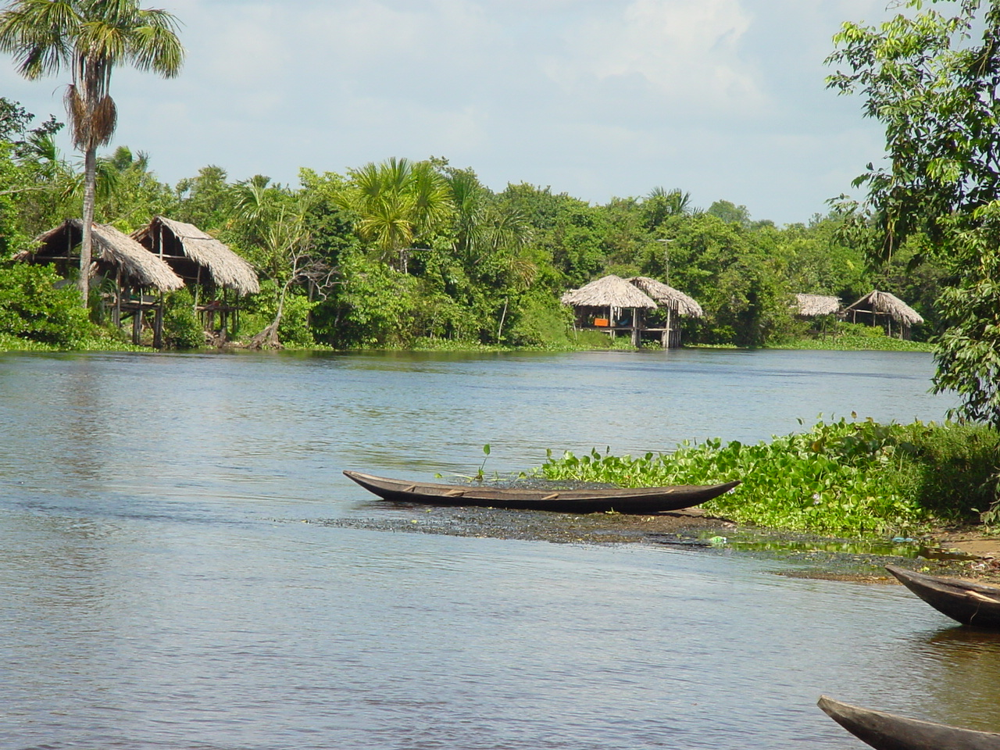
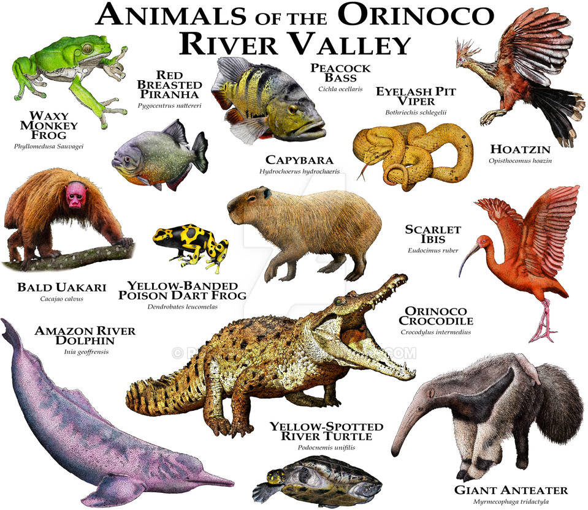
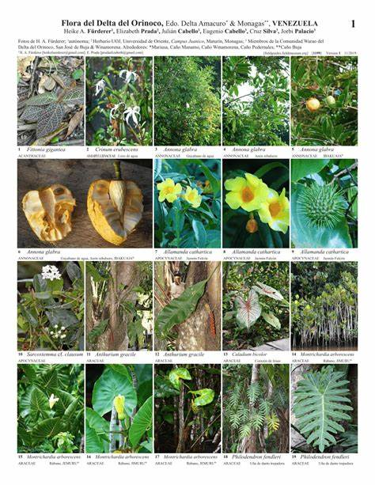

One of our favorite jungles is the Orinoco Jungle, a
rainforest that is east of Venezuela.
The Orinoco is home to wildlife such as capybaras, jaguars, Orinoco crocodiles, Orinoco
geese, and giant river otters.
The jungle's biodiversity is also made up plants including
water lettuce, golden trumpets,
pond apples, and swamp crinum lillies.
The jungle is by the Orinoco river which is cared for by
the
Warao people which is made up
of three indigenous groups including the Arawaks speakers, Carib speakers, and Chibchan
speakers.


